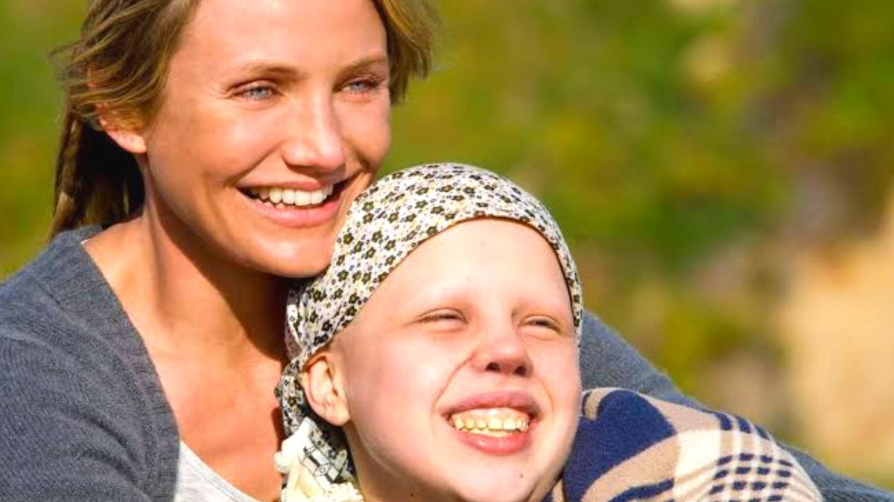

Trailer
Sinopse
Topo da páginaO filme Uma Prova de Amor é um drama lançado em 2009 que retrata a história de Kate, uma garota que possui Leucemia e exige atenção extrema. Porém, para se manter viva ela precisa de um doador compatível, mas esse doador não se encontra em sua família e não possui tempo o suficiente para um externo. Com isso, o médico da família sugere a ideia de terem mais um bebê, dessa vez com o intuito de ser compatível e realizar as doações necessárias para Kate se manter viva.
Assim Anna vem ao mundo e com o tempo diversas doações foram feitas de irmã para irmã, até o ponto em que Kate necessitava de um rim e Anna se negou a doar. Isso faz com que a irmã mais nova procurasse um advogado ao qual a ajudasse em sua emancipação médica e assim tivesse direitos pelo próprio corpo. A decisão da garota gera um grande choque na família, principalmente na mãe, que não quer aceitar o fato de que Kate está partindo.


Elenco
Topo da páginaO elenco é formado por Abigail Breslin (Anna, irmã), Evan Ellingson (Jesse, irmão), Sofia Vassilieva (Kate), Cameron Diaz (Sara, mãe), Jason Patric (Brian, pai) e Alec Baldwin (advogado).